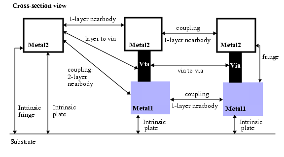

PEX Ignore Capacitance
Parasitic extraction
Specifies to ignore certain types of capacitance between specific layers. Ignores or removes parasitic capacitances specified through layers and capacitance models ALL, FRINGE, NEARBODY, or PLATE, and capacitance types COUPLING, DEVICE, or INTRINSIC.
Usage
Syntax 1, multilayer capacitance calculations for all types:
PEX IGNORE CAPACITANCE [GLOBAL] ALL [SUBSTRATE]
{layer | VIA layer1 layer2} {layer | VIA layer1 layer2} [{layer | VIA layer1 layer2}…]
Syntax 2, multilayer coupled capacitance calculations for non-via layers. Used only in Calibre xRC:
PEX IGNORE CAPACITANCE [GLOBAL] {FRINGE | NEARBODY | PLATE} layer1 layer2 [layer …]
Syntax 3, intrinsic capacitance calculations for one or more non-via layers. Used only in Calibre xRC:
PEX IGNORE CAPACITANCE [GLOBAL] INTRINSIC {FRINGE | PLATE} layer [layer …]
Syntax 4, intrinsic capacitance calculations for all layers:
PEX IGNORE CAPACITANCE [GLOBAL] INTRINSIC ALL
{layer | VIA layer1 layer2} [{layer | VIA layer1 layer2} …]
Syntax 5, complete coupling capacitance calculations for all layers:
PEX IGNORE CAPACITANCE [GLOBAL] COUPLING [INTRINSIC] {layer | VIA layer1 layer2} [{layer | VIA layer1 layer2} …]
Syntax 6, nearbody capacitance calculations for single-layer. Used only in Calibre xRC:
PEX IGNORE CAPACITANCE [GLOBAL] NEARBODY {layer | VIA layer1 layer2}
Syntax 7, intra-device capacitance calculations:
PEX IGNORE CAPACITANCE [GLOBAL] DEVICE
[INTRINSIC] [ENDCAP] [CFINTRINSIC] device_layer [device_layer…] marker_layer
Syntax 8, intra-cell capacitance calculations:
PEX IGNORE CAPACITANCE [GLOBAL] DEVICE [INTRINSIC] device_layer [device_layer…] CELL cell_name [cell_name …]
Syntax 9, single-layer or via capacitance calculations for all types:
PEX IGNORE CAPACITANCE [GLOBAL] ALL [SUBSTRATE]
{layer | VIA layer1 layer2 }
Arguments
- Specify one of the following capacitance effects to be ignored, depending on the syntax:
ALL — A required keyword for syntax 1, syntax 4, and syntax 9. Equivalent to specifying the rule independently for NEARBODY, FRINGE, and PLATE together.
FRINGE — A required keyword for syntax 2 and syntax 3. Ignores the capacitance between the side of a wire and either the substrate or the bottom or top of a wire.
NEARBODY — A required keyword for syntax 2 and syntax 6. Ignores the capacitance between the sides of two wires, either on the same layer or different layers.
PLATE — A required keyword for syntax 2 and syntax 3. Ignores the capacitance between the lower surface of a wire and substrate, or the lower surface of a wire to the upper surface of another wire.
For pictorial definitions of the different effects, see the following two figures.
Figure 1. Definition of Capacitance TypesFigure 2. Definition of Capacitance Types With Vias
- Specify one or more of the following, depending on the syntax:
SUBSTRATE — An optional keyword for syntax 1 and syntax 9. Specifies that all intrinsic capacitance for all layers specified will be ignored.
COUPLING — A required keyword only used in syntax 5. Specifies that all coupling capacitances for all layers will be ignored.
INTRINSIC — A required keyword for syntax 3 and syntax 4. An optional keyword for syntax 5, syntax 7, and syntax 8. For syntax 3, it is only valid with FRINGE and PLATE capacitance effects. Syntax 4 specifies that all intrinsic capacitances will also be ignored. For syntax 5, it specifies that intrinsic capacitances will also be ignored. For syntax 7 and syntax 8, it specifies that intrinsic capacitance will be ignored for the specified device layers.
ENDCAP — An optional keyword for syntax 7. Specifies to ignore endcap capacitance for the specified device layers.
CFINTRINSIC — An optional keyword for syntax 7 that specifies to ignore the intrinsic capacitance from the CF table. Used for varactor modeling, where the gate is attached to the well.
CELL — A required keyword for syntax 8. Specifies that device capacitances in named cells will be ignored.
DEVICE — A required keyword for syntax 7 and syntax 8. Specifies that device capacitances in named cells or between layers identified by touching or abutting the marker_layer will be ignored.
- GLOBAL
An optional keyword used to apply the specified ignore to all physical layers mapped to the same logical layer. This option is only valid with layers that have been specified in a PEX Map statement.
- layer
Specifies an original or derived non-via layer.
- VIA layer1 layer2
Keyword and parameter set that specifies a via defined between layer1 and layer2.
- device_layer
Specifies an original or derived layer, used to define a device or a layer in a device.
- marker_layer
Specifies an original or derived layer, used to mark the extent of a device.
- cell_name
Specifies a device that is defined by the contents of one more cells.
Description
Specifies to ignore or remove all capacitance from the particular interaction given by one of the capacitance effects, ALL, FRINGE, NEARBODY, or PLATE for the layer or layers listed. All layers must be properly defined. Interconnect and via layers can be specified. This statement cannot be used with PEX Elayer.
Using Syntax 1
For syntax 1, all of the capacitance calculations between any two layers will be ignored. This also includes via layers. Specifying a layer name twice in a single statement causes the coupling capacitance for that layer to be ignored.
The SUBSTRATE option can be added to ignore all intrinsic capacitance for the specified layers as well.
When specifying ignores for a MOSFET device gate in a Calibre xRC flow, ignore statements must be specified for both the gate-to-M1 and gate-to-diffCont components in order to properly ignore the device parasitic capacitance values around the device regions.
Syntax 1 Example 1
The statement
PEX IGNORE CAPACITANCE ALL M1 M2 ignores the capacitance calculations between the layers M1 and M2 for nearbody, fringe, and plate effects. The following figure shows an example of the effects that are ignored.

Syntax 1 Example 2
The statement
PEX IGNORE CAPACITANCE ALL SUBSTRATE M1 M2ignores the capacitance calculations between the layers M1 and M2 for nearbody, fringe, and plate effects, and all intrinsic capacitance for layers M1 and M2. The following figure shows an example of the effects that are ignored.
Syntax 1 Example 3
The statement
PEX IGNORE CAPACITANCE ALL SUBSTRATE M1 M2 M2ignores all capacitance calculations between the layers M1 and M2, and all 1-layer nearbody capacitance for layer M2. The following figure shows an example of the effects that are ignored.
Syntax 1 Example 4
The statement
PEX IGNORE CAPACITANCE ALL M1 VIA M1 M2 ignores the capacitance calculations between layer M1 and any vias between layers M1 and M2. The following figure highlights the effects that are ignored.

Syntax 1 Example 5
The statements
PEX IGNORE CAPACITANCE ALL gate M1
PEX IGNORE CAPACITANCE ALL gate VIA diff M1 must be specified together to ignore the capacitance calculations for a MOSFET device gate in a Calibre xRC flow. In other words, gate-to-M1 and gate-to-diffCont must be ignored together. Specifying only one of these ignores generates unexpected results. The following figure illustrates the effects that are ignored.
Using Syntax 2
For syntax 2, the indicated capacitance calculations between any two layers will be ignored regardless of the order of the layers; that is, both the rules for layer1-layer2 and layer2-layer1 effects are not run. You cannot ignore the capacitance rules for effects in only one direction.
When more than two layers are specified, all permutations of the layers are ignored. This syntax applies to non-via layers only and is only used in Calibre xRC.
Syntax 2 Example
The statement
PEX IGNORE CAPACITANCE FRINGE M1 M2 ignores the capacitance calculations between the layers M1 and M2 for fringe effects. The following figure shows an example of the effects that are ignored.
Using Syntaxes 3 and 4
Intrinsic capacitance is a one-layer effect. It represents the capacitance between the named layer and substrate. Specifying multiple layers in a single statement is the same as specifying an individual PEX Ignore Capacitance INTRINSIC statement for each layer.
Syntax 3 ignores calculation for FRINGE and PLATE intrinsic capacitances only. Use this syntax for non-via layers and only with Calibre xRC.
Syntax 3 Example
The statement
PEX IGNORE CAPACITANCE INTRINSIC PLATE M1ignores the capacitance calculations between the layers M1 and substrate for intrinsic plate effects. Figure 9 and Figure 10 show examples of the effects that are ignored.
Note that in Figure 10 the intrinsic via capacitance is not included.
Syntax 4 ignores all calculations for all layers, including via layers.
Syntax 4 Example 1
The statement
PEX IGNORE CAPACITANCE INTRINSIC ALL M1 M2ignores the capacitance calculations between the layer M1 and substrate and layer M2 and substrate for all intrinsic capacitance effects (both plate and fringe). The following figure shows examples of the intrinsic effects that are ignored.
Syntax 4 Example 2
The statement
PEX IGNORE CAPACITANCE INTRINSIC ALL VIA M1 M2 ignores the intrinsic capacitance for vias between layers M1 and M2. The following figure highlights the effects that are ignored.
Using Syntax 5
For syntax 5, all coupling capacitance between listed layers is ignored. Coupled capacitance to other layers will still be extracted.
Syntax 5 Example
The statement
PEX IGNORE CAPACITANCE COUPLING M1 M2ignores the coupling capacitance between the M1 layers, the M2 layers, and between the M1 and M2 layers as well. The following figure highlights the effects that are ignored.
Using Syntax 6
For syntax 6, nearbody capacitance calculations are ignored between polygons on the same layer. You can specify either via or non-via layers. Only a single layer or via layer pair may be specified. Use this syntax only with Calibre xRC
Syntax 6 Example 1
The statement
PEX IGNORE CAPACITANCE NEARBODY M2 ignores the nearbody capacitance between the geometries on layer M2. The following figure shows an example of the effects that are ignored.
Syntax 6 Example 2
The statement
PEX IGNORE CAPACITANCE NEARBODY VIA M1 M2ignores the capacitance calculations for vias between layers M1 and M2. The following figure highlights the effects that are ignored.
Using Syntaxes 7 and 8
Syntaxes 7 and 8 can be used to allow the calculation of parasitic capacitance between devices while excluding capacitance for layers inside of a device.
Syntax 7 prevents extraction of capacitance between device layers that are touching the marker_layer polygon. For example, metal1-metal2 parallel plates in a device capacitor that are touching the marker_layer are excluded from capacitance extraction. However, if many instances of the same type of capacitor are placed close to each other, the parasitic capacitance between these is calculated.
Use syntax 7 to ignore the endcap capacitance for a device.
Use syntax 8 when a device is defined by the contents of one or more cells.
Syntax 7 Example 1
The statement
PEX IGNORE CAPACITANCE DEVICE INTRINSIC ENDCAP OD POignores the OD/RSD intrinsic capacitance and coupling capacitance to ENDCAP shown in the following figure for devices with gate layer PO.
Using Syntax 9
For syntax 9, all capacitance calculations to and from the specified layer to any other layers (except intrinsic and ground layers) will be ignored. This also applies to a single via specification. If you want to also ignore capacitance to ground, then specify the SUBSTRATE keyword.
Examples
The statement
PEX IGNORE CAPACITANCE ALL M1 M2 M3is equivalent to including the following statements:
PEX IGNORE CAPACITANCE PLATE M1 M2
PEX IGNORE CAPACITANCE PLATE M1 M3
PEX IGNORE CAPACITANCE PLATE M2 M3PEX IGNORE CAPACITANCE FRINGE M1 M2
PEX IGNORE CAPACITANCE FRINGE M1 M3
PEX IGNORE CAPACITANCE FRINGE M2 M3PEX IGNORE CAPACITANCE NEARBODY M1 M2
PEX IGNORE CAPACITANCE NEARBODY M1 M3
PEX IGNORE CAPACITANCE NEARBODY M2 M3It does not include these rules:
PEX IGNORE CAPACITANCE NEARBODY M1
PEX IGNORE CAPACITANCE NEARBODY M2
PEX IGNORE CAPACITANCE NEARBODY M3
PEX IGNORE CAPACITANCE INTRINSIC ALL M1
PEX IGNORE CAPACITANCE INTRINSIC ALL M2
PEX IGNORE CAPACITANCE INTRINSIC ALL M3